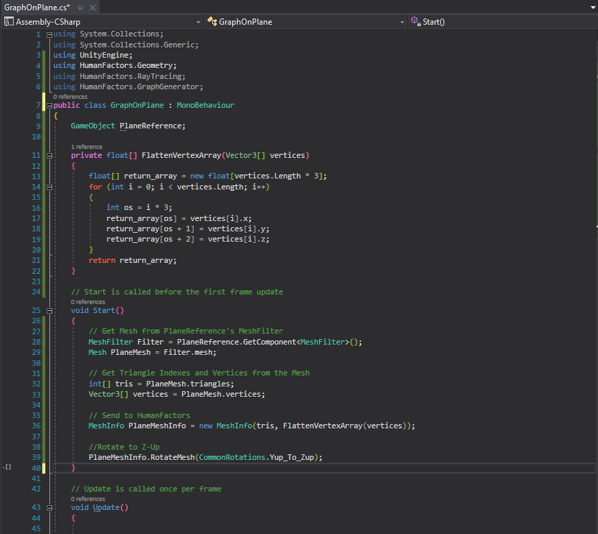

Previous Tutorial: The Graph Generator
- Reading a Mesh From Unity {#MeshFromUnity}
Intro
This tutorial will demonstrate how to pass geometry from the scene in Unity to Human Factors. We'll be using the project created in the previous guide: H:/HFGitlab/Analysis/docs/C# Documentation/markdown/3_graph_generator.md "The Graph Generator", and we'll be using concepts covered in the previous guides.
Scene Setup
Up until this point, we haven't needed to interact with the unity scene, aside script to the camera game object that's already there. In order for us to demonstrate reading geometry from the scene, we must first create geometry in the scene. For this example, we will create a plane in unity instead of creating our own plane in code.
To begin, open up the unity project from H:/HFGitlab/Analysis/docs/C# Documentation/markdown/3_graph_generator.md "The Graph Generator".

From here we will create a new plane then translate it directly to the origin.
Creating the Plane
Using the menubar at the top of the screen select GameObject > 3D Object > Plane.

Once clicked, a new 1x1 plane will be created, however it may not have been created at the origin exactly. For this tutorial we will reset the plane's position just be be sure it's always placed exactly in the same place.
Resetting the Plane's Position
Left Click on the newly created plane and look at Transform header in the Inspector located at the right sidebar.

Under Transform you can see the plane's position, rotation and scale within the scene. To set the plane's position to the origin, left on the three dots to the right of the transform header, and select Reset Position.

After clicking that button, your plane should be moved to the origin like in the image below. Ensure the position, rotation and scale values in the transform section completely match those of the image.

Now that we have the plane ready to go, we can begin working on the script to get its vertices and triangles.
Writing the Script
Open up the New Behavior script we created in the H:/HFGitlab/Analysis/docs/C# Documentation/markdown/3_graph_generator.md "previous tutorial"
Set Usings
Just like last time, we're going to declare which namespaces this script will use in the using section. GraphOnPlane will require the same usings as the previous project as well as the Graph Generator Namespace
Your usings for this script should look like this.

Setup for adding references through the unity inspector
Before we can worry about generating the graph, first we need to get the mesh from the Plane Gameobject we created in the Unity Editor. There are many ways to reference a GameObject from a script code, but for this example we'll be setting up our script so we can select the mesh to use from the scene in the Unity Inspector. For now, all we need to do is declare a GameObject member for our new class as shown below.

Later we'll use the unity inspector to assign the plane we created in the scene to this object
Passing Meshes from GameObjects to HumanFactors
Now that we have a reference to the plane game object we want to use, we need to get the raw vertices and faces of plane so we can pass it to HumanFactors for use in the graph generator.
Getting a reference to the mesh held by a specific Game Object
Before we can extract the triangles and vertices from one an instance of a Unity Mesh, we first need to get a reference to the Mesh itself. Doing this requires some understanding of Unity GameObjects and their components. Tabbing back over to Unity for a moment, clicking on the plane, then looking at the inspector in the right reveals that the plane we see in the scene isn't just a mesh, but is in fact a GameObject comprised of several different components.

As stated in the Unity Documentation:
GameObjects are the fundamental objects in Unity that represent characters, props and scenery. They do not accomplish much in themselves but they act as containers for Components, which implement the real functionality. For example, a Light object is created by attaching a Light component to a GameObject.
So in short, the GameObject for the plane won't give us the information we need. Instead we need to get a reference to the GameObject's component that carries the Mesh: The MeshFilter. Thankfully getting a reference to a component of a Game Object is easy, all you need to do is call the GetComponent member function of the game object you want to get a component from.
In our script we will store a reference to the plane's mesh filter in a variable creatively named Filter at the beginning of GraphOfPlane's Start() function like so:
Then we'll access the actual mesh carried by Filter by calling its .mesh property
Getting the vertices and triangles from a Unity Mesh
We're not out of the woods yet. For Human Factors to use a mesh it needs two things:
1) The (x,y,z) location of every vertex that comprises the mesh as an array of floats. 2) The Indexes for each triangle or "Face" of the mesh as an array of integers.
Fortunately, Unity provides an easy way to access the triangles of a mesh, but unfortunately the vertices only come in an array of Vector3. To simplify the process of converting the vertices to a suitable format, we will add a seperate method called "FlattenVertexArray" that will transform the array of Vector3 into an array of float ready for Human Factors.
Just above Start(), add the following Method:

Transforming the Mesh from Y-Up to Z-Up
But wait, there's one more step involved when directly pulling meshes from Unity. Another quick peek at the editor in the top right corner reveals that Unity's coordinate system is fundamentally different from the coordinate system needed by Human Factors.


The Graph Generator expects geometry to be stored as if the Z-Axis were up as shown in the right picture. Unity however, the Y-Axis is up as shown in the left picture, meaning that we'll get inaccurate results if we use the meshes as is. To solve this, MeshInfo has a method RotateMesh that can easily rotate MeshInfo objects after they've been created. Another class in the Geometry namespace titled CommonRotations contains the rotation necessary to perform this conversion.
With all this in mind, here is the code to prepare the mesh.
Your end file should look like the following:

screenshot, so instead I'll just post the full code in this document here.